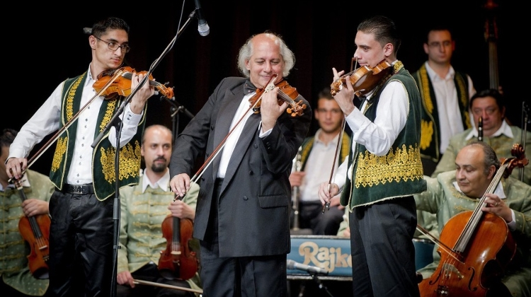
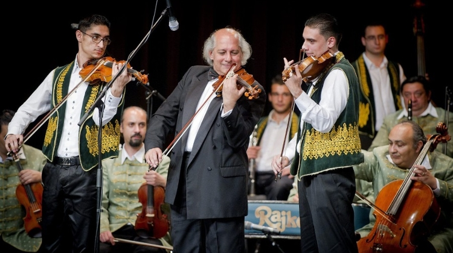

Romani culture is deeply complex and multifaceted just like any other. Traditional Romani cultural customs are still around today, most notably Roma celebration practices such as music, dance, and elaborate clothing, which all have influences from both South Asian and Eastern European regional customs. Romani folk music has a beautiful lively sound that is reminiscent of traditional Indian music but with a European twist, but there are also many famous Roma musicians who make music in a modern style, such as that of the notable hip hop artist Connect-R. Roma people also have their own macrolanguage called Romani that can be categorized into seven unique languages. In Romania, this exists as a dialect of Romani that has many borrowed words from Romanian. Traditional Romani music often showcases this language, although most mainstream Romani music is in Romanian or some other nationally official language, depending on the country of origin.
 
